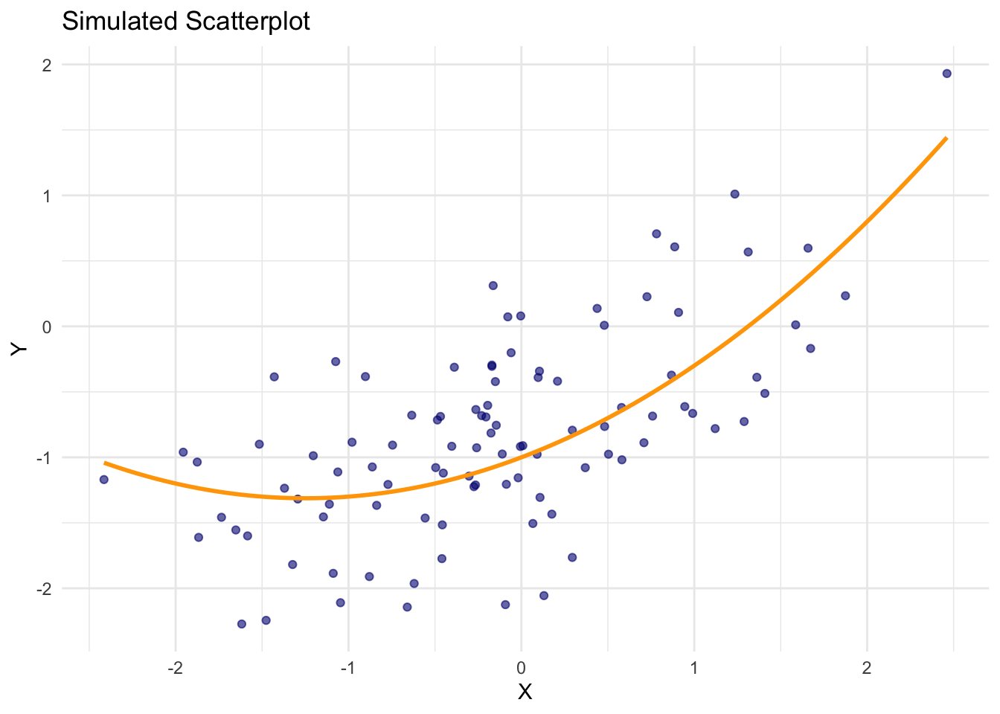
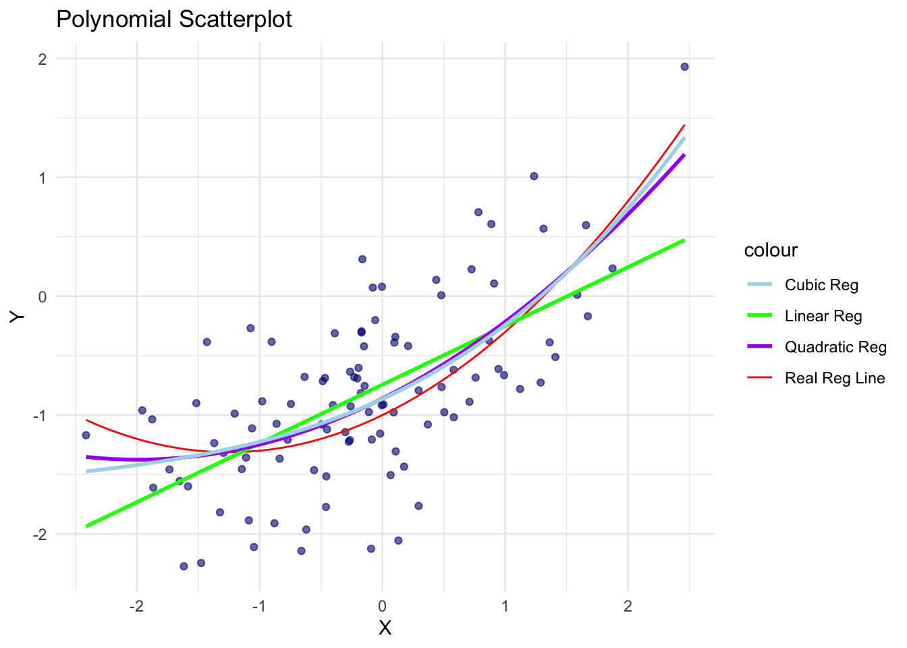
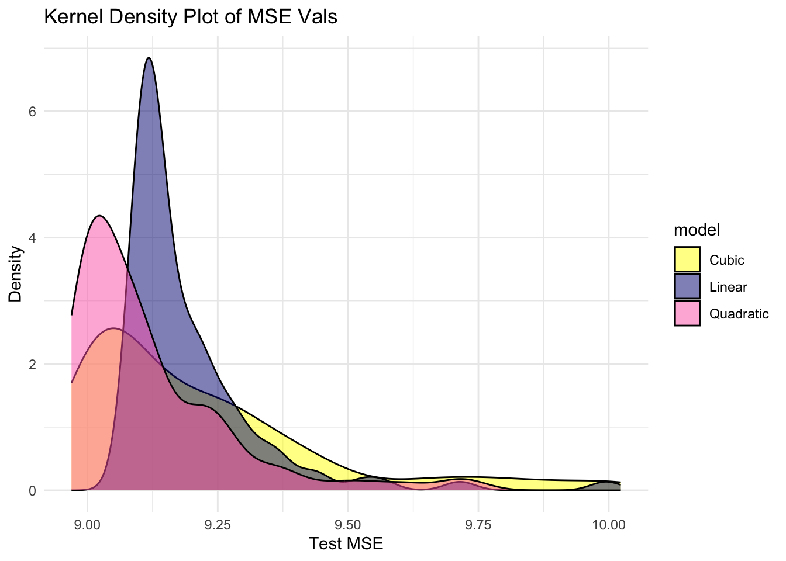

library(tidyverse) # functions for data manipulationHomework #1: Supervised Learning
Required R packages and Directories
Problem 1: Evaluating a Regression Model
a. Data generating functions
Create a set of functions to generate data from the following distributions:
\[\begin{align*} X &\sim \mathcal{N}(0, 1) \\ Y &= -1 + .5X + .2X^2 + \epsilon \\ \epsilon &\sim \mathcal{N}(0,\, \sigma) \end{align*}\]
Solution
n_samps <- 100
st_dev <- 0.5
gen_data <- tibble(
x = rnorm(n_samps, mean = 0, sd = 1),
err = rnorm(n_samps, mean = 0, sd = st_dev),
y = -1 + 0.5 * x + 0.2 * x^2 + err
) %>%
select(-err)
print(gen_data)# A tibble: 100 × 2
x y
<dbl> <dbl>
1 -0.161 -0.523
2 -0.0836 -0.00729
3 -1.63 -1.70
4 -0.393 -1.57
5 0.432 -1.01
6 1.05 -0.294
7 -0.892 -1.30
8 1.85 0.370
9 0.634 0.530
10 -1.12 -2.18
# ℹ 90 more rowsb. Generate training data
Simulate \(n=100\) realizations from these distributions using \(\sigma=3\). Produce a scatterplot and draw the true regression line \(f(x) = E[Y \mid X=x]\).
- Use
set.seed(611)prior to generating the data.
Solution
set.seed(611)
n_samps2 <- 100
st_dev2 <- 3
gen_data2 <- tibble(
x = rnorm(n_samps, mean = 0, sd = 1),
err = rnorm(n_samps, mean = 0, sd = st_dev),
y = -1 + 0.5 * x + 0.2 * x^2 + err
) %>%
select(-err)
ggplot(gen_data2, aes(x = x, y = y)) +
geom_point(alpha = 0.6, color = "navy") +
stat_function(fun = function(x) -1 + 0.5 * x + 0.2 * x^2,
color = "orange", size = 1) +
labs(title = "Simulated Scatterplot",
x = "X", y = "Y") +
theme_minimal()Warning: Using `size` aesthetic for lines was deprecated in ggplot2 3.4.0.
ℹ Please use `linewidth` instead.
c. Fit three models
Fit three polynomial regression models using least squares: linear, quadratic, and cubic. Produce another scatterplot, add the fitted lines and true population line \(f(x)\) using different colors, and add a legend that maps the line color to a model.
- Note: The true model is quadratic, but we are also fitting linear (less complex) and cubic (more complex) models.
Solution
lin_m <- lm(y ~ x, data = gen_data)
quad_m <- lm(y ~ poly(x, 2, raw = TRUE), data = gen_data)
cube_m <- lm(y ~ poly(x, 3, raw = TRUE), data = gen_data)
ggplot(gen_data2, aes(x = x, y = y)) +
geom_point(alpha = 0.6, color = "navy") +
stat_function(fun = function(x) -1 + 0.5 * x + 0.2 * x^2,
aes(color = "Real Reg Line")) +
stat_smooth(method = "lm", formula = y ~ x, aes(color = "Linear Reg"), se = FALSE) +
stat_smooth(method = "lm", formula = y ~ poly(x, 2, raw = TRUE), aes(color = "Quadratic Reg"), se = FALSE) +
stat_smooth(method = "lm", formula = y ~ poly(x, 3, raw = TRUE), aes(color = "Cubic Reg"), se = FALSE) +
labs(title = "Polynomial Scatterplot",
x = "X", y = "Y") +
theme_minimal() + scale_color_manual(values = c("Real Reg Line" = "red",
"Linear Reg" = "green",
"Quadratic Reg" = "purple",
"Cubic Reg" = "lightblue"))
d. Predictive performance
Generate a test data set of 10,000 observations from the same distributions. Use set.seed(612) prior to generating the test data.
- Calculate the estimated mean squared error (MSE) for each model.
- Are the results as expected?
Solution
set.seed(612)
n_test <- 10000
st_dev <- 3
testing <- tibble(
x = rnorm(n_test, mean = 0, sd = 1),
err = rnorm(n_test, mean = 0, sd = st_dev),
y = -1 + 0.5 * x + 0.2 * x^2 + err) %>%
select(-err)
testing <- testing %>%
mutate(pred_linear = predict(lin_m, newdata = testing),
pred_quad = predict(quad_m, newdata = testing),
pred_cubic = predict(cube_m, newdata = testing))
linear_mse <- mean((testing$y - testing$pred_linear)^2)
quad_mse <- mean((testing$y - testing$pred_quad)^2)
cubic_mse <- mean((testing$y - testing$pred_cubic)^2)
cat("Linear Model MSE:", linear_mse, "\n")Linear Model MSE: 9.095996 cat("Quadratic Model MSE:", quad_mse, "\n")Quadratic Model MSE: 9.0076 cat("Cubic Model MSE:", cubic_mse, "\n")Cubic Model MSE: 9.004577 The results of the MSE calculations are as expected because it shows the largest MSE belonging to the linear model, which is logical because the actual regression line is curved, and fitting the data to a line will result in more error. The smallest MSE belongs to the quadratic model, which makes sense because we know that the quadratic model is the closest in representing the real regression line because it includes an X^2 term.
e. Optimal performance
What is the best achievable MSE? That is, what is the MSE if the true \(f(x)\) was used to evaluate the test set? How close does the best method come to achieving the optimum?
Solution
testing2 <- testing %>%
mutate(Y_real = -1 + 0.5 * x + 0.2 * x^2)
mse_actual <- mean((testing2$y - testing2$Y_real)^2)
cat("Best achievable MSE", mse_actual, "\n")Best achievable MSE 8.972119 The best achievable MSE of 8.97 is a result of the model that matches perfectly with the real function of the distribution. The optimal mean squared error is 9 (total variance of model using true function model), and the model MSE is 8.976, meaning that the model MSE is only 0.024 off of the optimal MSE, which is pretty good.
f. Replication
The MSE scores obtained in part d came from one realization of training data. Here will we explore how much variation there is in the MSE scores by replicating the simulation many times.
- Re-run parts b. and c. (i.e., generate training data and fit models) 100 times.
- Do not generate new testing data
- Use
set.seed(613)prior to running the simulation and do not set the seed in any other places.
- Calculate the test MSE for all simulations.
- Use the same test data from part d. (This question is only about the variability that comes from the training data).
- Create kernel density or histogram plots of the resulting MSE values for each model.
Solution
set.seed(613)
n_samps <- 100
st_dev <- 3
n_training <- 100
linear_mse <- numeric(n_training)
quad_mse <- numeric(n_training)
cubic_mse <- numeric(n_training)
# run 100 times
for (i in 1:n_training) {
training <- tibble(
x = rnorm(n_samps, mean = 0, sd = 1),
err = rnorm(n_samps, mean = 0, sd = st_dev),
y = -1 + 0.5 * x + 0.2 * x^2 + err) %>%
select(-err)
lin_m <- lm(y ~ x, data = training)
quad_m <- lm(y ~ poly(x, 2), data = training)
cube_m <- lm(y ~ poly(x, 3), data = training)
# all MSE's
linear_mse[i] <- mean((testing$y - predict(lin_m, newdata = testing))^2)
quad_mse[i] <- mean((testing$y - predict(quad_m, newdata = testing))^2)
cubic_mse[i] <- mean((testing$y - predict(cube_m, newdata = testing))^2)
}
cat("Avg MSE - Linear Model:", mean(linear_mse), "\n")Avg MSE - Linear Model: 9.312836 cat("Avg MSE - Quad Model:", mean(quad_mse), "\n")Avg MSE - Quad Model: 9.301011 cat("Avg MSE - Cubic Model:", mean(cubic_mse), "\n")Avg MSE - Cubic Model: 9.513463 mse_results <- tibble(
model = c(rep("Linear", n_training), rep("Quadratic", n_training), rep("Cubic", n_training)),
test_MSE = c(linear_mse, quad_mse, cubic_mse))
mse_summary <- mse_results %>%
group_by(model) %>%
summarize(
Mean_MSE = mean(test_MSE),
SD_MSE = sd(test_MSE),
Min_MSE = min(test_MSE),
Max_MSE = max(test_MSE))
print(mse_summary)# A tibble: 3 × 5
model Mean_MSE SD_MSE Min_MSE Max_MSE
<chr> <dbl> <dbl> <dbl> <dbl>
1 Cubic 9.51 0.526 8.99 11.3
2 Linear 9.31 0.292 9.09 11.0
3 Quadratic 9.30 0.341 8.98 10.6ggplot(mse_results, aes(x = test_MSE, fill = model)) +
geom_density(alpha = 0.5) +
labs(title = "Kernel Density Plot of MSE Vals",
x = "Test MSE",
y = "Density") +
theme_minimal() +
scale_fill_manual(values = c("Linear" = "navy", "Quadratic" = "hotpink", "Cubic" = "yellow"))
g. Best model
Show a count of how many times each model was the best. That is, out of the 100 simulations, count how many times each model had the lowest MSE.
Solution
mse_counttable <- tibble(
round = 1:n_training,
linear_m_mse = linear_mse,
quad_m_mse = quad_mse,
cubic_m_mse = cubic_mse)
count_model_win <- mse_counttable %>%
mutate(model_win = case_when(
linear_m_mse < quad_m_mse & linear_m_mse < cubic_m_mse ~ "Linear",
quad_m_mse < linear_m_mse & quad_m_mse < cubic_m_mse ~ "Quadratic",
cubic_m_mse < linear_m_mse & cubic_m_mse < quad_m_mse ~ "Cubic",
)) %>%
count(model_win)
print(count_model_win)# A tibble: 3 × 2
model_win n
<chr> <int>
1 Cubic 7
2 Linear 28
3 Quadratic 65h. Function to implement simulation
Write a function that implements the simulation in part f. The function should have arguments for i) the size of the training data \(n\), ii) the standard deviation of the random error \(\sigma\), and iii) the test data. Use the same set.seed(613).
Solution
perform_model <- function(n_samps, st_dev, testing) {
set.seed(613)
n_training <- 100
linear_mse <- numeric(n_training)
quad_mse <- numeric(n_training)
cubic_mse <- numeric(n_training)
# run 100 times
for (i in 1:n_training) {
training <- tibble(
x = rnorm(n_samps, mean = 0, sd = 1),
err = rnorm(n_samps, mean = 0, sd = st_dev),
y = -1 + 0.5 * x + 0.2 * x^2 + err) %>%
select(-err)
lin_m <- lm(y ~ x, data = training)
quad_m <- lm(y ~ poly(x, 2), data = training)
cube_m <- lm(y ~ poly(x, 3), data = training)
# all MSE's
linear_mse[i] <- mean((testing$y - predict(lin_m, newdata = testing))^2)
quad_mse[i] <- mean((testing$y - predict(quad_m, newdata = testing))^2)
cubic_mse[i] <- mean((testing$y - predict(cube_m, newdata = testing))^2)
}
cat("Avg MSE - Linear Model:", mean(linear_mse), "\n")
cat("Avg MSE - Quad Model:", mean(quad_mse), "\n")
cat("Avg MSE - Cubic Model:", mean(cubic_mse), "\n")
mse_results <- tibble(
model = c(rep("Linear", n_training), rep("Quadratic", n_training), rep("Cubic", n_training)),
test_MSE = c(linear_mse, quad_mse, cubic_mse))
mse_summary <- mse_results %>%
group_by(model) %>%
summarize(
Mean_MSE = mean(test_MSE),
SD_MSE = sd(test_MSE),
Min_MSE = min(test_MSE),
Max_MSE = max(test_MSE))
mse_counttable <- tibble(
round = 1:n_training,
linear_m_mse = linear_mse,
quad_m_mse = quad_mse,
cubic_m_mse = cubic_mse)
count_model_win <- mse_counttable %>%
mutate(model_win = case_when(
linear_m_mse < quad_m_mse & linear_m_mse < cubic_m_mse ~ "Linear",
quad_m_mse < linear_m_mse & quad_m_mse < cubic_m_mse ~ "Quadratic",
cubic_m_mse < linear_m_mse & cubic_m_mse < quad_m_mse ~ "Cubic",
)) %>%
count(model_win)
err_plot <- ggplot(mse_results, aes(x = test_MSE, fill = model)) +
geom_density(alpha = 0.5) +
labs(title = "Kernel Density Plot of MSE Vals",
x = "Test MSE",
y = "Density") +
theme_minimal() +
scale_fill_manual(values = c("Linear" = "navy", "Quadratic" = "hotpink", "Cubic" = "yellow"))
return(err_plot)
return(count_model_win)
return(mse_summary)
}
final <- perform_model(n_samps = 100, st_dev = 2, testing = testing)Avg MSE - Linear Model: 9.192974
Avg MSE - Quad Model: 9.117348
Avg MSE - Cubic Model: 9.21089 print(final)
i. Performance when \(\sigma=2\)
Use your function to repeat the simulation in part f, but use \(\sigma=2\). Report the number of times each model was best (you do not need to produce any plots).
- Be sure to generate new test data with (\(n = 10000\), \(\sigma = 2\), using
seed = 612).
Solution
set.seed(612)
n_samps4 <- 10000
st_dev4 <- 2
testing <- tibble(
X = rnorm(n_samps4, mean = 0, sd = 1),
err = rnorm(n_samps4, mean = 0, sd = st_dev4),
Y = -1 + 0.5 * X + 0.2 * X^2 + err) %>%
select(-err)
set.seed(613)
n_samps <- 100
st_dev4 <- 2
n_training <- 100
mse_linear <- numeric(n_training)
mse_quadratic <- numeric(n_training)
mse_cubic <- numeric(n_training)
# run 100 rounds
for (i in 1:n_training) {
# new training data: stdev = 2
training <- tibble(
X = rnorm(n_samps, mean = 0, sd = 1),
err = rnorm(n_samps, mean = 0, sd = st_dev4),
Y = -1 + 0.5 * X + 0.2 * X^2 + err) %>%
select(-err)
linear_m2 <- lm(Y ~ X, data = training)
quad_m2 <- lm(Y ~ poly(X, 2), data = training)
cubic_m2 <- lm(Y ~ poly(X, 3), data = training)
# all new MSE calcs
mse_linear[i] <- mean((testing$Y - predict(linear_m2, newdata = testing))^2)
mse_quadratic[i] <- mean((testing$Y - predict(quad_m2, newdata = testing))^2)
mse_cubic[i] <- mean((testing$Y - predict(cubic_m2, newdata = testing))^2)
}
mse_record <- tibble(
round = 1:n_training,
linear_mse = mse_linear,
quad_mse = mse_quadratic,
cubic_mse = mse_cubic
)
best_model_counts <- mse_record %>%
mutate(model_win = case_when(
linear_mse < quad_mse & linear_mse < cubic_mse ~ "Linear",
quad_mse < linear_mse & quad_mse < cubic_mse ~ "Quadratic",
cubic_mse < linear_mse & cubic_mse < quad_mse ~ "Cubic", )) %>%
count(model_win)
print(count_model_win)# A tibble: 3 × 2
model_win n
<chr> <int>
1 Cubic 7
2 Linear 28
3 Quadratic 65j. Performance when \(\sigma=4\) and \(n=300\)
Repeat i, but now use \(\sigma=4\) and \(n=300\).
- Be sure to generate new test data with (\(n = 10000\), \(\sigma = 4\), using
seed = 612).
Solution
set.seed(612)
n_samps4 <- 10000
st_dev4 <- 2
testing <- tibble(
X = rnorm(n_samps4, mean = 0, sd = 1),
err = rnorm(n_samps4, mean = 0, sd = st_dev4),
Y = -1 + 0.5 * X + 0.2 * X^2 + err
) %>%
select(-err)set.seed(613)
n_samps <- 100
st_dev4 <- 2
n_training <- 100
mse_linear <- numeric(n_training)
mse_quadratic <- numeric(n_training)
mse_cubic <- numeric(n_training)
# run 100 rounds
for (i in 1:n_training) {
# new training data: stdev = 2
training <- tibble(
X = rnorm(n_samps, mean = 0, sd = 1),
err = rnorm(n_samps, mean = 0, sd = st_dev4),
Y = -1 + 0.5 * X + 0.2 * X^2 + err
) %>%
select(-err)
linear_m2 <- lm(Y ~ X, data = training)
quad_m2 <- lm(Y ~ poly(X, 2), data = training)
cubic_m2 <- lm(Y ~ poly(X, 3), data = training)
# all new MSE calcs
mse_linear[i] <- mean((testing$Y - predict(linear_m2, newdata = testing))^2)
mse_quadratic[i] <- mean((testing$Y - predict(quad_m2, newdata = testing))^2)
mse_cubic[i] <- mean((testing$Y - predict(cubic_m2, newdata = testing))^2)
}
mse_record <- tibble(
round = 1:n_training,
linear_mse = mse_linear,
quad_mse = mse_quadratic,
cubic_mse = mse_cubic
)
best_model_counts <- mse_record %>%
mutate(model_win = case_when(
linear_mse < quad_mse & linear_mse < cubic_mse ~ "Linear",
quad_mse < linear_mse & quad_mse < cubic_mse ~ "Quadratic",
cubic_mse < linear_mse & cubic_mse < quad_mse ~ "Cubic", )) %>%
count(model_win)
print(count_model_win)# A tibble: 3 × 2
model_win n
<chr> <int>
1 Cubic 7
2 Linear 28
3 Quadratic 65k. Understanding
Describe the effects \(\sigma\) and \(n\) has on selection of the best model? Why is the true model form (i.e., quadratic) not always the best model to use when prediction is the goal?
Solution
An increased value of sigma (noise) makes it more difficult to build models that identify true relationships from all the noise. So, when sigma is large, even the true model form (quadratic) may overfit to the noise in training, causing the same error in the test data. Similarly, if sample size (n) is small, it makes models prone to overfitting with complex models. Therefore, when working with datasets without a sufficient sample size, it would likely be better to fit a simpler model than the “true” model.